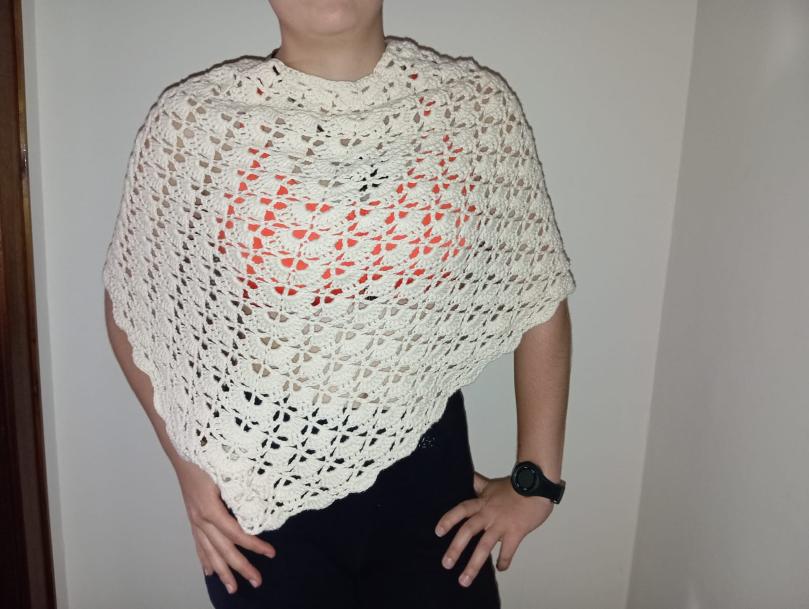

Bienvenid@ a Crochet Nita, un humilde emprendimiento con finalidad de dar a conocer el arte del crochet.
Dejanos contarte como empezó nuestra historia:
Para ello nos remontamos al año 2008, María necesitaba un arrullo para su hija que estaba en camino, Nadia, pero las prendas para bebés eran muy costosas. Así pues María se fue a una antigua tienda de Balaguer y compró una revista, lana y una aguja de crochet, aprendió a hacer punto granny y consiguio hacer un arrullo para el nacimiento de su hija Nadia.
Con el paso del tiempo con mayor o menor intensidad María nunca dejó de tejer. En 2023 comenzó a innovar haciendo prendas de vestir, cada vez con más soltura. Después de númerosas peticiones por parte de las actuales clientas, Nadia decidió crearle esta web para así dar a conocer los proyectos de María.
Aquí os mostramos algunos de los diseños que preceden a esta página web:

En diciembre de 2025 las hijas de María le regalaron una caja hecha a mano para que pudiera colocar sus hilos y sus prendas mientras aún no estaban acabadas, todas las prendas pasan por esta caja.